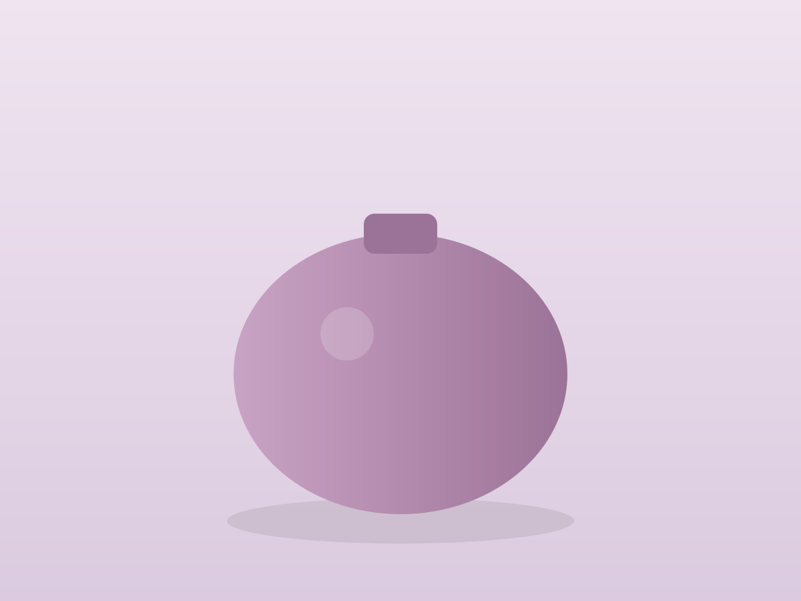
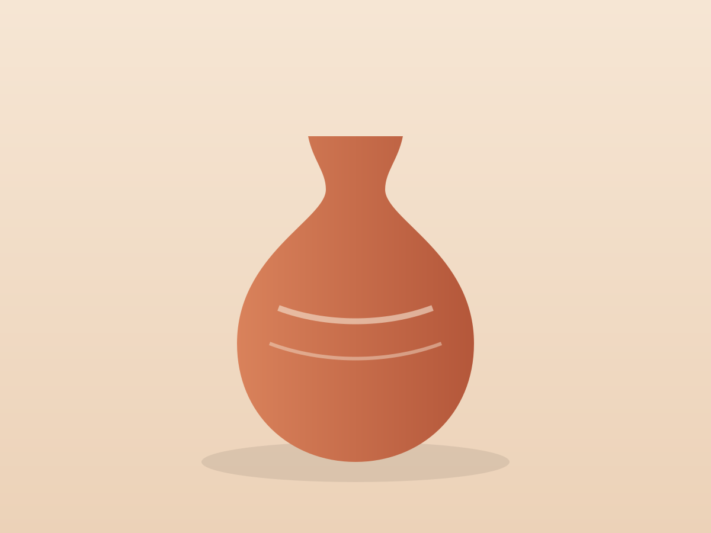
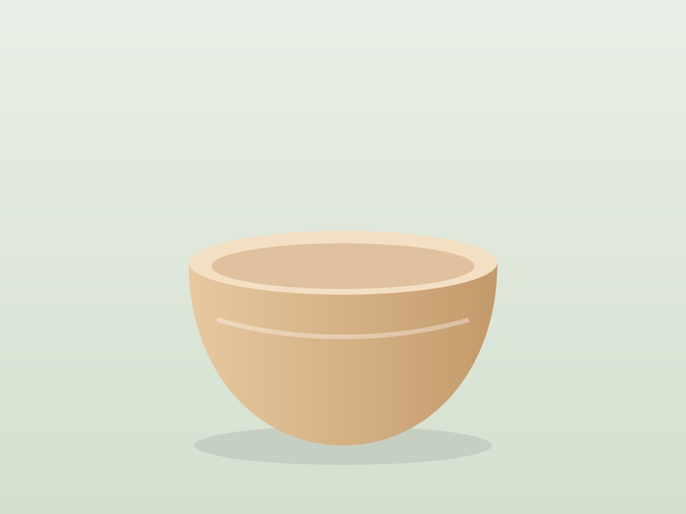
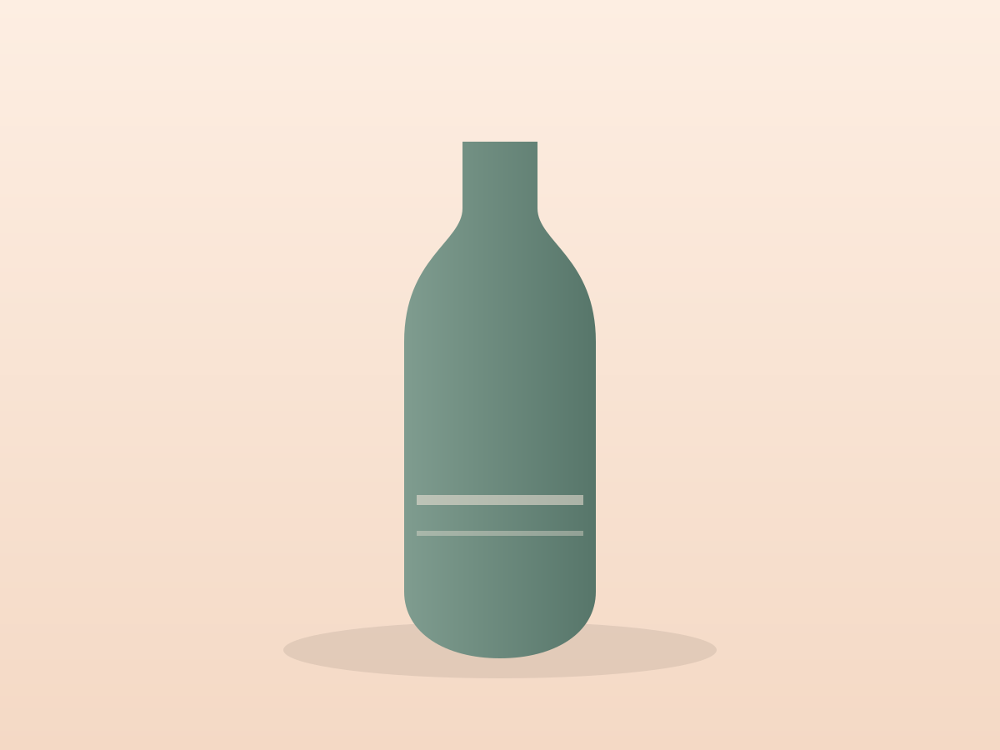
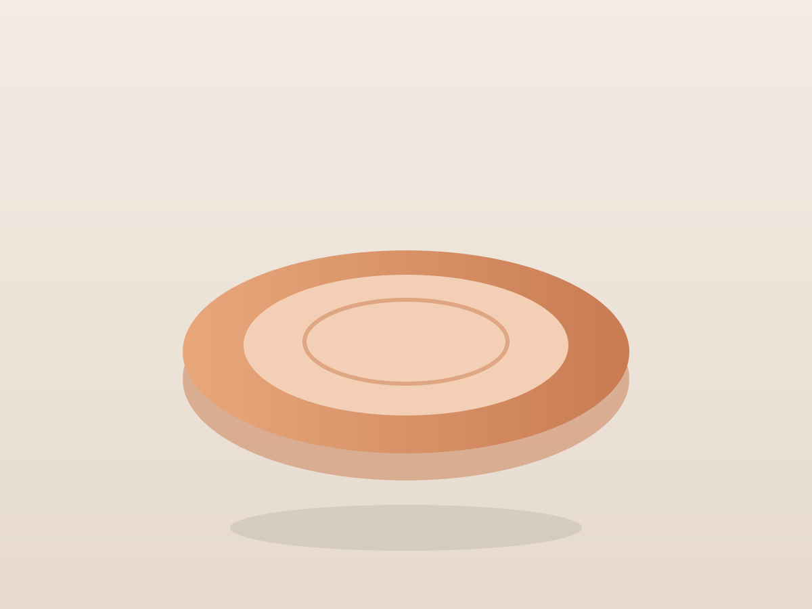
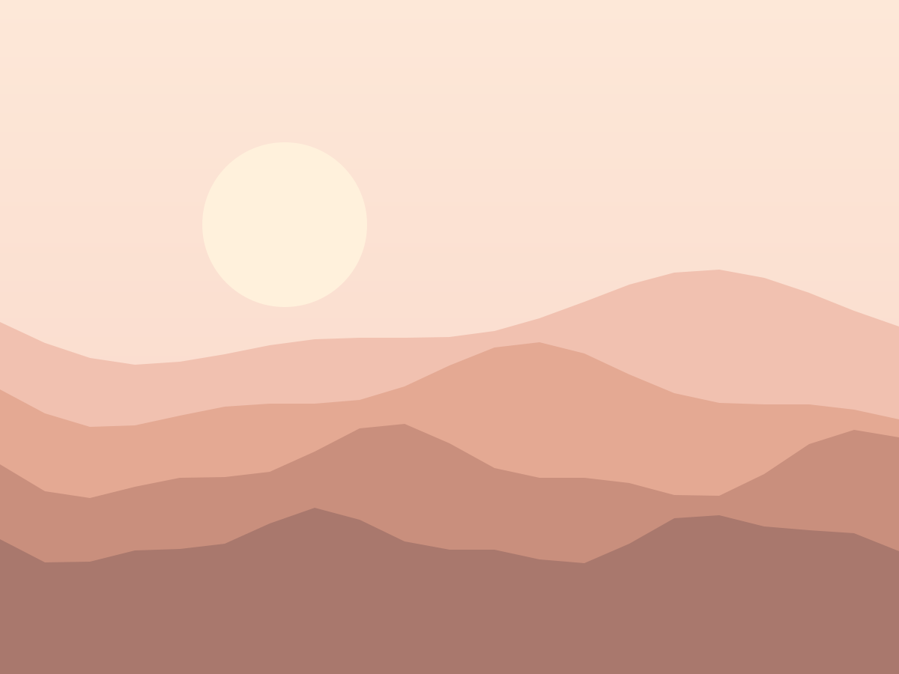

Grès & faïence · Drôme
Des objets
Des objets
qui ont pris
le temps.
Chaque pièce est tournée, émaillée et cuite à la main dans notre atelier de Dieulefit. Aucune n'est tout à fait pareille à sa voisine.

1280pièces sorties du four cette année
4céramistes à l'atelier
1250degrés pour la cuisson du grès
0moule, tout est tourné
Collections
Quatre familles de terre
Survolez une collection pour l'apercevoir.
- Galets 12 pièces
- Sable 18 pièces
- Sauge 9 pièces
- Table d'été 24 pièces
Nouveautés
La fournée d'automne
Faites défiler : les pièces passent devant vous, comme sur l'étagère de l'atelier.
68 €

Bol sable

Col sauge

Assiettes x4
Amphore
Trois semaines entre la motte de terre et votre table.
Tourner
La terre est centrée, ouverte, montée en une seule fois.
Sécher
Dix jours à l'ombre, retournée chaque matin pour ne pas fendre.
Cuire
Deux cuissons, dont une à 1 250 °C qui rend le grès étanche.

Portes ouvertes
Venez tourner
Venez tourner
avec nous.
Chaque premier samedi du mois, l'atelier ouvre ses portes. Café, terre et tablier fournis.
Réserver un samedi